Prága (Praha) · 27 állomás
Várudvarok, gótikus tornyok, barokk paloták és városi történetek. Magyar nyelvű idegenvezető Prága 27 helyszínéhez.
A mérés automatikusan indul oldalnyitáskor, majd 5 másodperc múlva frissít. A távolságok légvonalban értendők, a navigáció gyalogos útvonalat nyit. A sorszámok a helyszíneket azonosítják, nem optimalizált sétasorrendet jelentenek. A helyszínek több külön sétára is feloszthatók, a sorrend az eredeti listát követi.
Helyadat nem elérhető. Ellenőrizd a helymeghatározási engedélyt. A lista helyadat nélkül is használható.
01. Prágai vár (Pražský hrad)
50.090000, 14.400000 · ID PRG-001
mérésre vártávolság —★ Kiemelt látnivaló
Fejedelmi várból uralkodói és állami központtá alakult történelmi városrész, palotákkal, templomokkal és panorámás udvarokkal.
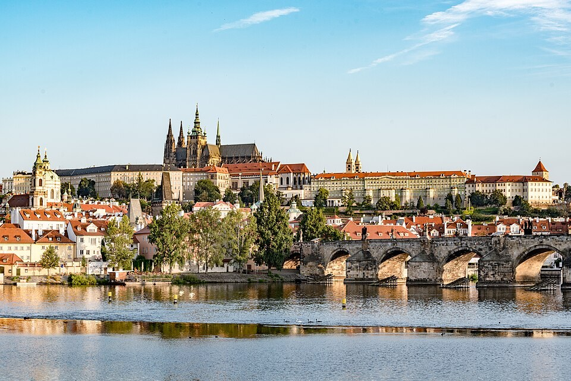
A kép nem tölthető be.
02. Szent Vitus székesegyház (Katedrála svatého Víta)
50.090830, 14.400560 · ID PRG-002
mérésre vártávolság —★ Kiemelt látnivaló
Gótikus koronázótemplom Mucha üvegablakával, Szent Vencel kápolnájával és a cseh uralkodók emlékeivel.
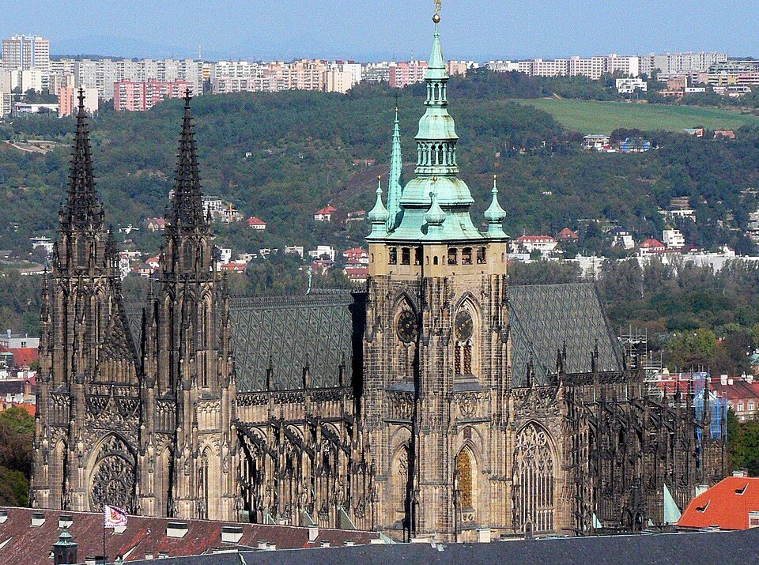
A kép nem tölthető be.
03. Arany utcácska (Zlatá ulička)
50.092200, 14.403900 · ID PRG-003
mérésre vártávolság —
Apró várbeli lakóházak az őrök, aranyművesek és Franz Kafka emlékével, az alkimisták legendáin túl.
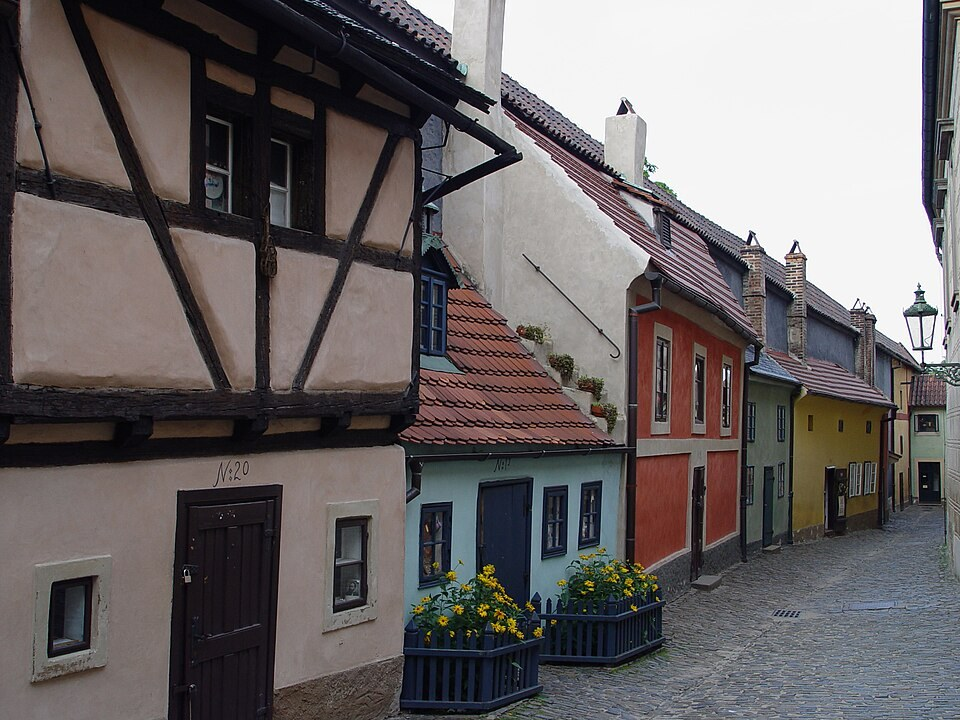
A kép nem tölthető be.
04. Daliborka torony (Daliborka)
50.092361, 14.405000 · ID PRG-004
mérésre vártávolság —
Jagelló kori védőtorony és egykori börtön Dalibor z Kozojed sorsával és a hegedülő rab legendájával.

A kép nem tölthető be.
Fotó · Jürgen Regel, Marian… ·
Képforrás ·
CC BY 3.0 · Kicsinyítve és JPEG formátumba tömörítve
05. Lobkowicz palota (Lobkowiczký palác)
50.091609, 14.404852 · ID PRG-005
mérésre vártávolság —
Magángyűjtemény Bruegel és Canaletto festményeivel, Mozart és Beethoven kézjegyeivel, különleges városi panorámával.
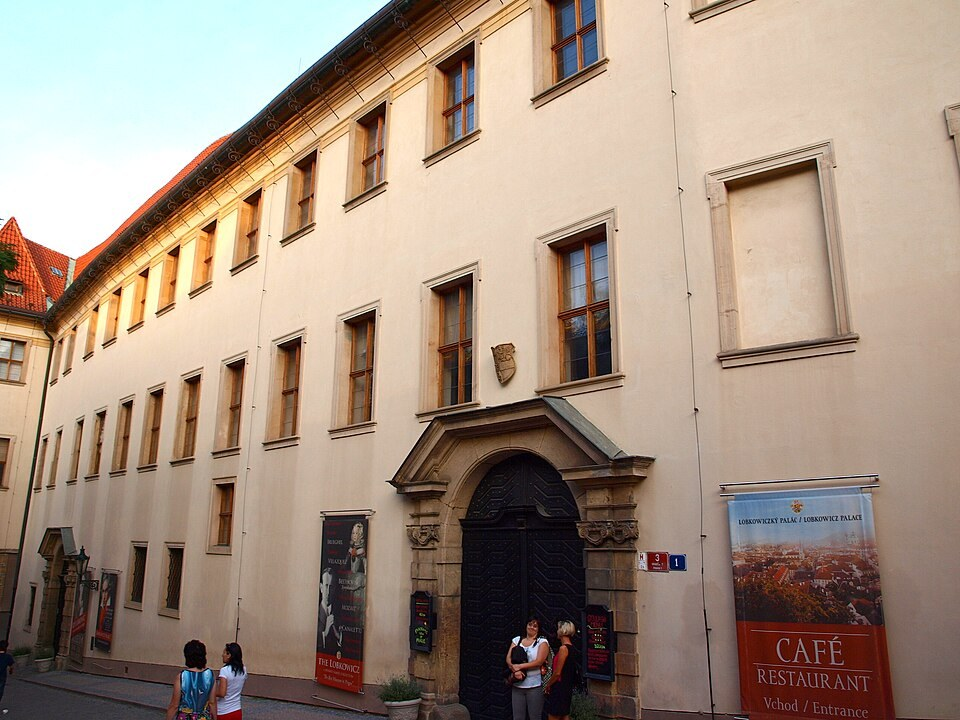
A kép nem tölthető be.
06. Régi Királyi Palota és Ulászló terem (Starý královský palác)
50.090428, 14.401453 · ID PRG-006
mérésre vártávolság —
Merész késő gótikus boltozat, lovagi tornákra vezető lovaglépcső és az 1618-as defenesztráció emléke.
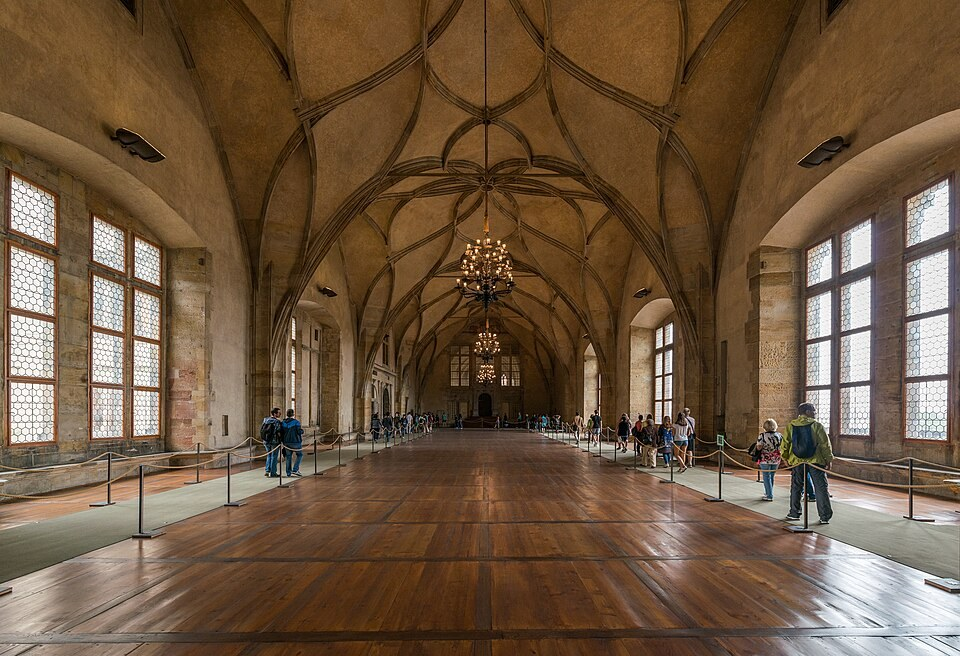
A kép nem tölthető be.
07. Szent György bazilika (Bazilika svatého Jiří)
50.091200, 14.402600 · ID PRG-007
mérésre vártávolság —
Barokk homlokzat mögött román kori templomtér, a korai cseh fejedelemség és Szent Ludmila emlékeivel.
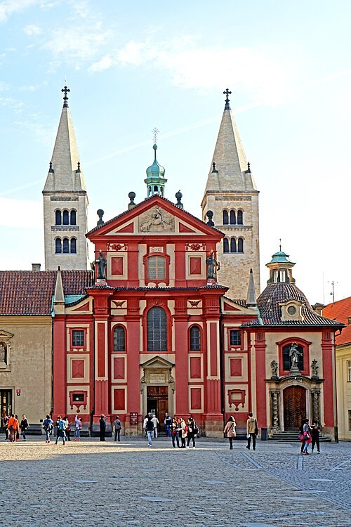
A kép nem tölthető be.
08. Strahovi kolostor és könyvtár (Strahovský klášter)
50.086000, 14.390000 · ID PRG-008
mérésre vártávolság —★ Kiemelt látnivaló
Premontrei apátság két pompás történeti könyvtárteremmel, freskókkal és régi ritkasággyűjteménnyel.
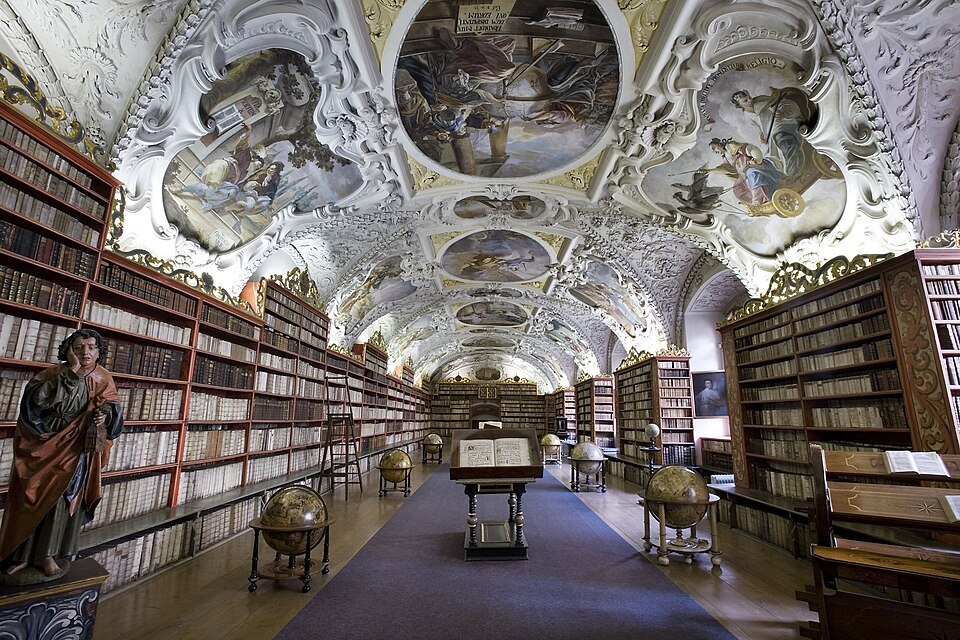
A kép nem tölthető be.
09. Prágai Loreta (Pražská Loreta)
50.089279, 14.391861 · ID PRG-009
mérésre vártávolság —
Barokk zarándokhely az itáliai szent ház másolatával, harangjátékkal és a Prágai Nap kincstári alkotásával.

A kép nem tölthető be.
10. Újvilág utca (Nový Svět)
50.091291, 14.389612 · ID PRG-010
mérésre vártávolság —
Csendesebb, kisvárosias utcák a Hradzsinban, alacsony házakkal, régi házjelekkel és lakónegyedi hangulattal.
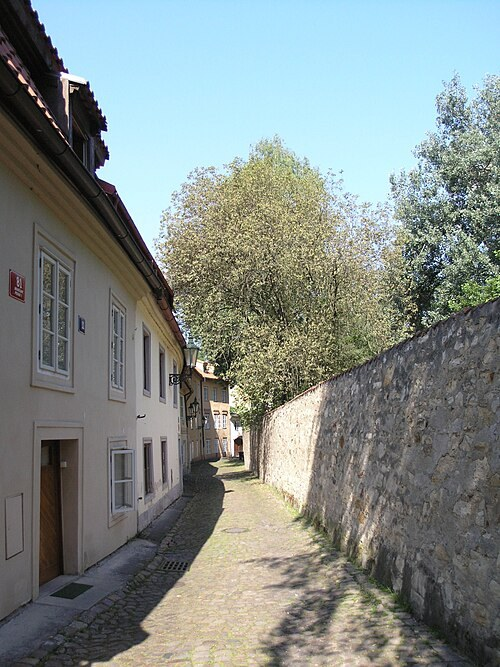
A kép nem tölthető be.
11. Petřín kilátótorony (Petřínská rozhledna)
50.083544, 14.395050 · ID PRG-011
mérésre vártávolság —
Az 1891-es jubileumi kiállítás acélrácsos kilátója, párizsi ihletéssel és a dombtetőről nyíló prágai panorámával.

A kép nem tölthető be.
12. Károly híd (Karlův most)
50.086501, 14.411724 · ID PRG-012
mérésre vártávolság —★ Kiemelt látnivaló
Középkori moldvai kőhíd barokk szoborgalériával, Nepomuki Szent János emlékével és ikonikus városképekkel.

A kép nem tölthető be.
13. Kisoldal és központi tere (Malá Strana a Malostranské náměstí)
50.088269, 14.404333 · ID PRG-013
mérésre vártávolság —
A vár alatti palotás negyed központja, barokk látványtengelyekkel, kapualjakkal és élő városi forgalommal.
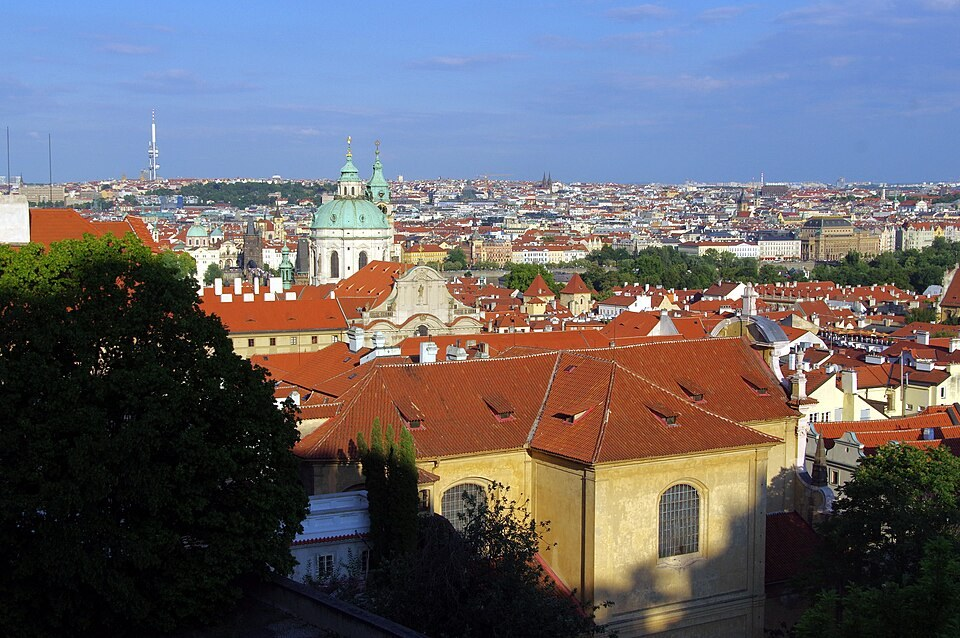
A kép nem tölthető be.
14. Kisoldali Szent Miklós templom (Kostel svatého Mikuláše)
50.088000, 14.403200 · ID PRG-014
mérésre vártávolság —★ Kiemelt látnivaló
A Dientzenhoferek barokk temploma mozgalmas belső térrel, freskókkal és Mozart orgonajátékának emlékével.

A kép nem tölthető be.
15. Kampa szigete és a sárga pingvinek (Kampa)
50.084201, 14.408022 · ID PRG-015
mérésre vártávolság —
Čertovka, malomkerekek, folyóparti park és modern művészet a Museum Kampa környezetében.

A kép nem tölthető be.
A Museum Kampa folyóparti környezete, a part mentén a sárga pingvinekkel. A pingvininstalláció alkotója a Cracking Art. Fotó · Dietmar Rabich ·
Képforrás ·
CC BY-SA 4.0 · Kicsinyítve és JPEG formátumba tömörítve
16. Lennon fal (Lennonova zeď)
50.086148, 14.406607 · ID PRG-016
mérésre vártávolság —
Színes emlékhely Lennon zenéjével, békeüzenetekkel és a szabad megszólalás prágai történetével.

A kép nem tölthető be.
A Lennon fal korábbi, 2014-es felülete. A mai állapot eltérhet. Fotó · Spaul57 ·
Képforrás ·
CC BY-SA 4.0 · Kicsinyítve és JPEG formátumba tömörítve
17. Óvárosi tér (Staroměstské náměstí)
50.087525, 14.421105 · ID PRG-017
mérésre vártávolság —★ Kiemelt látnivaló
A történelmi város szíve Husz János emlékművével, polgárházakkal és az 1621-es megtorlás emlékével.

A kép nem tölthető be.
18. Orloj és Óvárosháza (Pražský orloj a Staroměstská radnice)
50.087008, 14.420917 · ID PRG-018
mérésre vártávolság —★ Kiemelt látnivaló
Az 1410-es csillagászati óra égboltot és naptárt mutató szerkezete, mozgó apostolokkal és városházi toronnyal.

A kép nem tölthető be.
Fotó · Steve Collis from Melbourne, Australia ·
Képforrás ·
CC BY 2.0 · Kicsinyítve és JPEG formátumba tömörítve
19. Týn templom (Chrám Matky Boží před Týnem)
50.087600, 14.422700 · ID PRG-019
mérésre vártávolság —★ Kiemelt látnivaló
Gótikus ikertornyok az Óvárosi tér fölött, huszita történettel, barokk berendezéssel és Tycho Brahe sírjával.

A kép nem tölthető be.
20. Lőportorony (Prašná brána)
50.087262, 14.427792 · ID PRG-020
mérésre vártávolság —
Késő gótikus városkapu a koronázási út elején, Jagelló kori építéstörténettel és kilátóval.
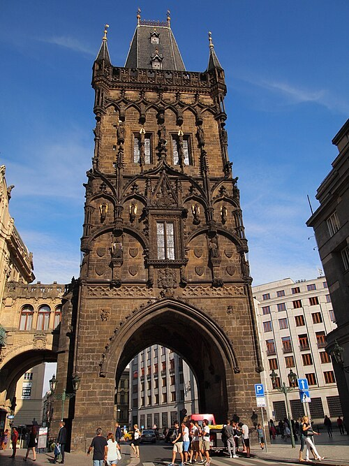
A kép nem tölthető be.
21. Városi Ház (Obecní dům)
50.087500, 14.428056 · ID PRG-021
mérésre vártávolság —★ Kiemelt látnivaló
Szecessziós összművészeti központ Smetana teremmel, Mucha alkotásaival és az 1918-as államalapítás emlékeivel.
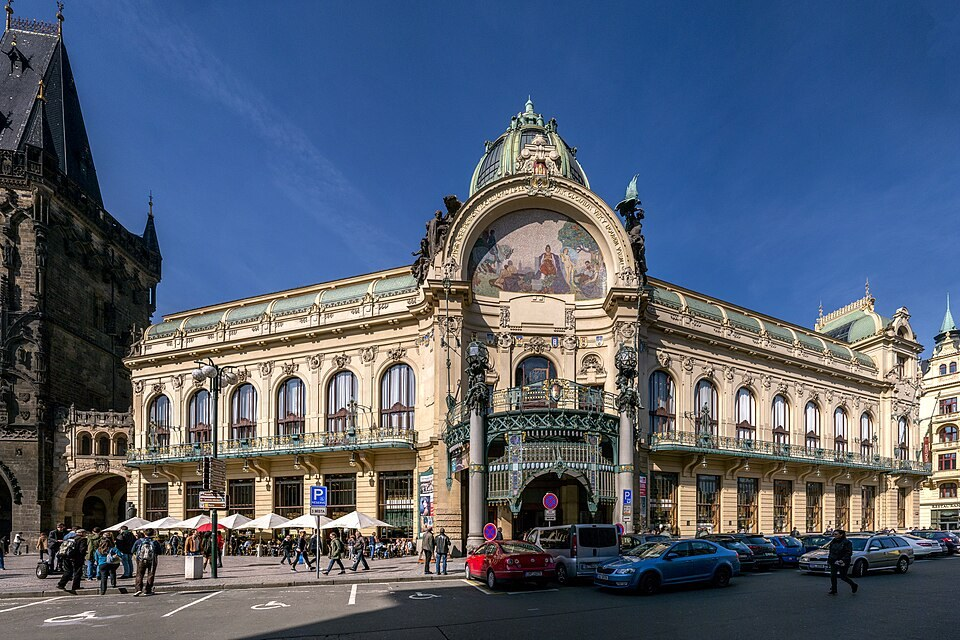
A kép nem tölthető be.
22. Vencel tér (Václavské náměstí)
50.081390, 14.427500 · ID PRG-022
mérésre vártávolság —
Középkori lópiacból modern sugárúttá lett tér, Szent Vencel szobrával és a huszadik század nagy fordulataival.
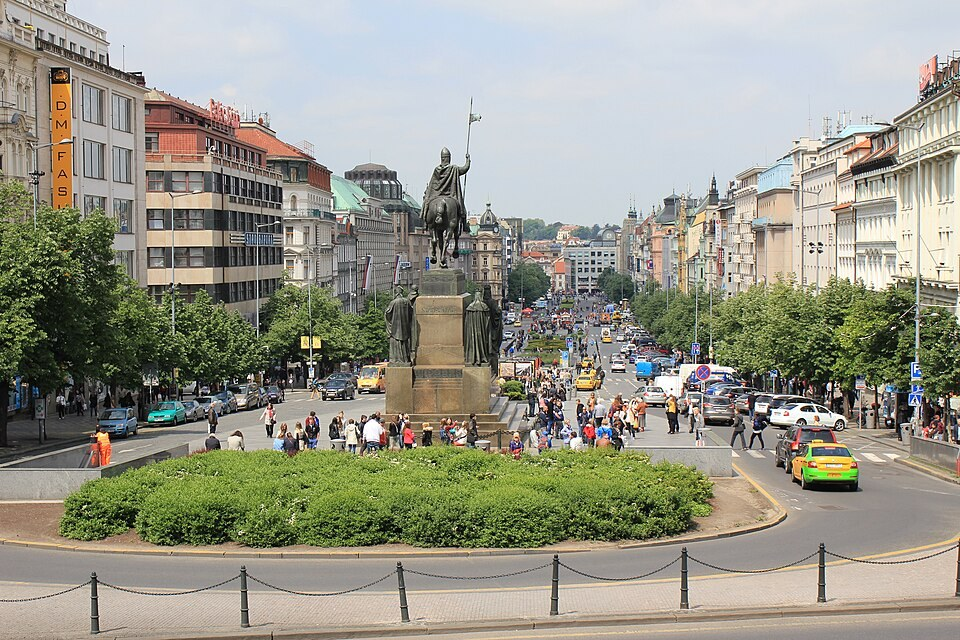
A kép nem tölthető be.
23. Nemzeti Múzeum (Národní muzeum)
50.078831, 14.430797 · ID PRG-023
mérésre vártávolság —
Neoreneszánsz múzeumpalota a Vencel tér felső végén, díszlépcsőházzal, Pantheonnal és külön látogatható kupolával.

A kép nem tölthető be.
A Nemzeti Múzeum történeti épületének díszlépcsőháza. Fotó · Stavros Argyropoulos ·
Képforrás ·
CC BY-SA 2.0 · Kicsinyítve és JPEG formátumba tömörítve
24. Zsidó negyed (Josefov)
50.089720, 14.418610 · ID PRG-024
mérésre vártávolság —
Történelmi zsinagógák, a Régi Zsidó Temető és a holokauszt emlékezete egy átalakult városi negyedben.

A kép nem tölthető be.
25. Régi Új zsinagóga (Staronová synagoga)
50.090000, 14.418610 · ID PRG-025
mérésre vártávolság —★ Kiemelt látnivaló
Középkori gótikus imaház, élő vallási hagyománnyal és Löw rabbi Gólem legendájával.
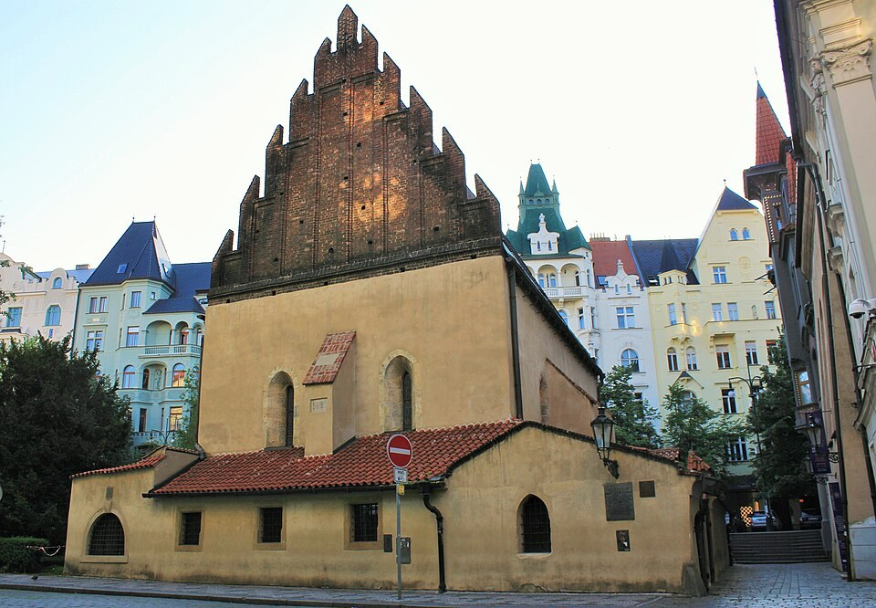
A kép nem tölthető be.
26. Táncoló Ház (Tančící dům)
50.075473, 14.414143 · ID PRG-026
mérésre vártávolság —
Milunić és Gehry 1996-os folyóparti épülete, Fred és Ginger táncát idéző formákkal és modern várostörténettel.
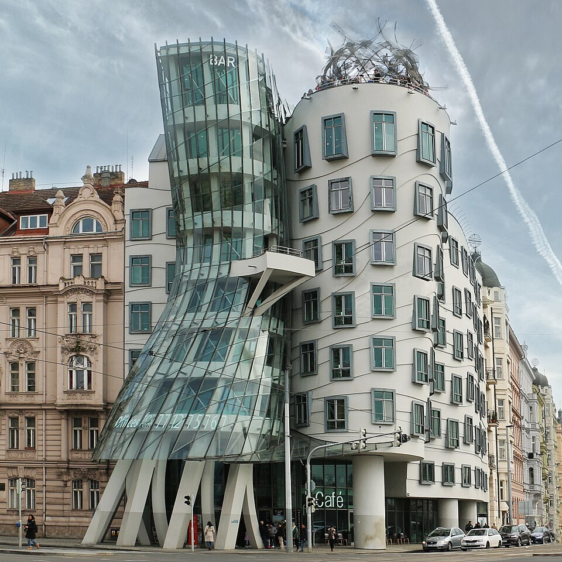
A kép nem tölthető be.
Fotó · Danny Alexander Lettkemann, Architekt ·
Képforrás ·
CC BY-SA 4.0 · Kicsinyítve és JPEG formátumba tömörítve
27. Vyšehrad vára és bazilikája (Vyšehrad)
50.064170, 14.419440 · ID PRG-027
mérésre vártávolság —★ Kiemelt látnivaló
Sziklavár és park a Moldva fölött, cseh mondákkal, Szent Péter és Pál bazilikájával, valamint a Slavín temetővel.
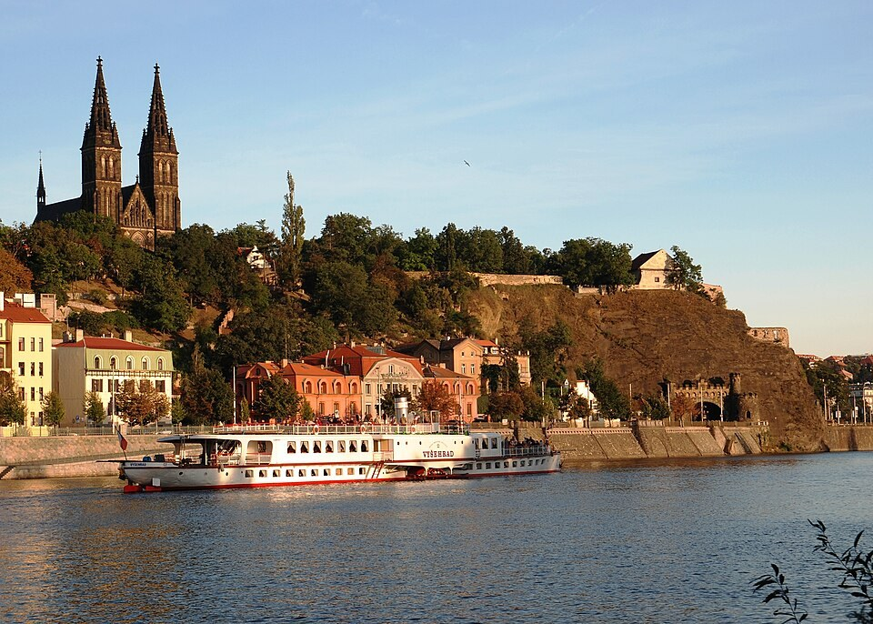
A kép nem tölthető be.